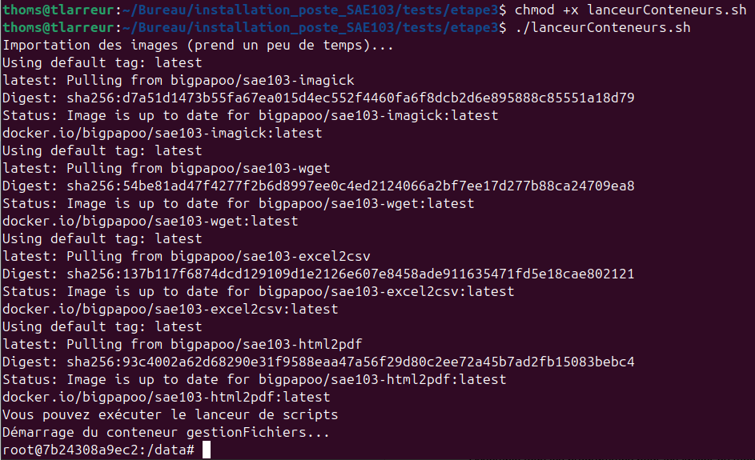
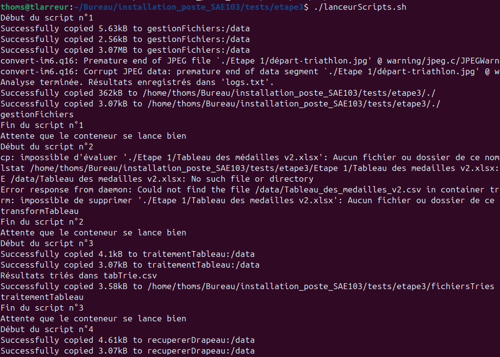
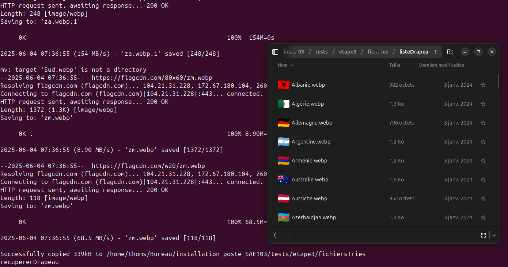

Script de lancement du conteneur Docker, il importe d'abord les images necéssaires puis invite à effectué la 2e étape.

La 2e étape lance le script qui trie et modifie les fichiers ainsi que télécharge les drapeaux de tous les pays participant aux JO 2024.

Téléchargement des drapeaux de chaque pays avec l'API flagcnd.com. On obtient un dossier avec les drapeaux en 2 formats différents qui pourront être utilisé sur le site web des JO 2024 pour le tableau des scores par exemple.